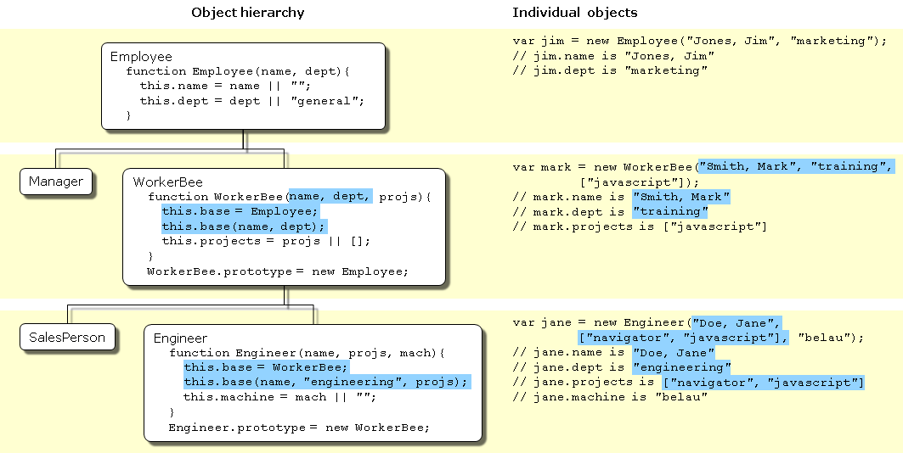

Details of the object model
JavaScript is an object-based language based on prototypes, rather than being class-based. Because of this different basis, it can be less apparent how JavaScript allows you to create hierarchies of objects and to have inheritance of properties and their values. This chapter attempts to clarify the situation.
This chapter assumes that you are already somewhat familiar with JavaScript and that you have used JavaScript functions to create simple objects.
Class-based vs. prototype-based languages
Class-based object-oriented languages, such as Java and C++, are founded on the concept of two distinct entities: classes and instances.
- A class defines all of the properties that characterize a certain set of objects (considering methods and fields in Java, or members in C++, to be properties). A class is abstract rather than any particular member in a set of objects it describes. For example, the
Employeeclass could represent the set of all employees. - An instance, on the other hand, is the instantiation of a class; that is. For example,
Victoriacould be an instance of theEmployeeclass, representing a particular individual as an employee. An instance has exactly the same properties of its parent class (no more, no less).
A prototype-based language, such as JavaScript, does not make this distinction: it has objects. A prototype-based language has the notion of a prototypical object, an object used as a template from which to get the initial properties for a new object. Any object can specify its own properties, either when you create it or at run time. In addition, any object can be associated as the prototype for another object, allowing the second object to share the first object's properties.
Defining a class
In class-based languages, you define a class in a separate class definition. In that definition you can specify special methods, called constructors, to create instances of the class. A constructor method can specify initial values for the instance's properties and perform other processing appropriate at creation time. You use the new operator in association with the constructor method to create class instances.
JavaScript follows a similar model, but does not have a class definition separate from the constructor. Instead, you define a constructor function to create objects with a particular initial set of properties and values. Any JavaScript function can be used as a constructor. You use the new operator with a constructor function to create a new object.
Note: ECMAScript 2015 introduces a class declaration:
JavaScript classes, introduced in ECMAScript 2015, are primarily syntactical sugar over JavaScript's existing prototype-based inheritance. The class syntax does not introduce a new object-oriented inheritance model to JavaScript.
Subclasses and inheritance
In a class-based language, you create a hierarchy of classes through the class definitions. In a class definition, you can specify that the new class is a subclass of an already existing class. The subclass inherits all the properties of the superclass and additionally can add new properties or modify the inherited ones. For example, assume the Employee class includes only the name and dept properties, and Manager is a subclass of Employee that adds the reports property. In this case, an instance of the Manager class would have all three properties: name, dept, and reports.
JavaScript implements inheritance by allowing you to associate a prototypical object with any constructor function. So, you can create exactly the Employee — Manager example, but you use slightly different terminology. First you define the Employee constructor function, specifying the name and dept properties. Next, you define the Manager constructor function, calling the Employee constructor and specifying the reports property. Finally, you assign a new object derived from Employee.prototype as the prototype for the Manager constructor function. Then, when you create a new Manager, it inherits the name and dept properties from the Employee object.
Adding and removing properties
In class-based languages, you typically create a class at compile time and then you instantiate instances of the class either at compile time or at run time. You cannot change the number or the type of properties of a class after you define the class. In JavaScript, however, at run time you can add or remove properties of any object. If you add a property to an object that is used as the prototype for a set of objects, the objects for which it is the prototype also get the new property.
Summary of differences
The following table gives a short summary of some of these differences. The rest of this chapter describes the details of using JavaScript constructors and prototypes to create an object hierarchy and compares this to how you would do it in Java.
| Category | Class-based (Java) | Prototype-based (JavaScript) |
|---|---|---|
| Class vs. Instance | Class and instance are distinct entities. | All objects can inherit from another object. |
| Definition | Define a class with a class definition; instantiate a class with constructor methods. | Define and create a set of objects with constructor functions. |
| Creation of new object | Create a single object with the new operator. |
Same. |
| Construction of object hierarchy | Construct an object hierarchy by using class definitions to define subclasses of existing classes. | Construct an object hierarchy by assigning an object as the prototype associated with a constructor function. |
| Inheritance model | Inherit properties by following the class chain. | Inherit properties by following the prototype chain. |
| Extension of properties | Class definition specifies all properties of all instances of a class. Cannot add properties dynamically at run time. | Constructor function or prototype specifies an initial set of properties. Can add or remove properties dynamically to individual objects or to the entire set of objects. |
The employee example
The remainder of this chapter uses the employee hierarchy shown in the following figure.

This shows an object hierarchy with the following objects:
Employeehas the propertiesname(whose value defaults to the empty string) anddept(whose value defaults to "general").Manageris based onEmployee. It adds thereportsproperty (whose value defaults to an empty array, intended to have an array ofEmployeeobjects as its value).WorkerBeeis also based onEmployee. It adds theprojectsproperty (whose value defaults to an empty array, intended to have an array of strings as its value).SalesPersonis based onWorkerBee. It adds thequotaproperty (whose value defaults to 100). It also overrides thedeptproperty with the value "sales", indicating that all salespersons are in the same department.Engineeris based onWorkerBee. It adds themachineproperty (whose value defaults to the empty string) and also overrides thedeptproperty with the value "engineering".
Creating the hierarchy
There are several ways to define appropriate constructor functions to implement the Employee hierarchy. How you choose to define them depends largely on what you want to be able to do in your application.
This section shows how to use very simple (and comparatively inflexible) definitions to demonstrate how to get the inheritance to work. In these definitions, you cannot specify any property values when you create an object. The newly-created object gets the default values, which you can change at a later time.
In a real application, you would probably define constructors that allow you to provide property values at object creation time (see More flexible constructors for information). For now, these simple definitions demonstrate how the inheritance occurs.
The following Java and JavaScript Employee definitions are similar. The only difference is that you need to specify the type for each property in Java but not in JavaScript (this is due to Java being a strongly typed language while JavaScript is a weakly typed language).
JavaScript (using this may cause an error for the following examples)
class Employee {
constructor() {
this.name = '';
this.dept = 'general';
}
}
JavaScript ** (use this instead)
function Employee() {
this.name = '';
this.dept = 'general';
}
Java
public class Employee {
public String name = "";
public String dept = "general";
}
The Manager and WorkerBee definitions show the difference in how to specify the next object higher in the inheritance chain. In JavaScript, you add a prototypical instance as the value of the prototype property of the constructor function, then override the prototype.constructor to the constructor function. You can do so at any time after you define the constructor. In Java, you specify the superclass within the class definition. You cannot change the superclass outside the class definition.
JavaScript
function Manager() {
Employee.call(this);
this.reports = [];
}
Manager.prototype = Object.create(Employee.prototype);
Manager.prototype.constructor = Manager;
function WorkerBee() {
Employee.call(this);
this.projects = [];
}
WorkerBee.prototype = Object.create(Employee.prototype);
WorkerBee.prototype.constructor = WorkerBee;
Java
public class Manager extends Employee {
public Employee[] reports =
new Employee[0];
}
public class WorkerBee extends Employee {
public String[] projects = new String[0];
}
The Engineer and SalesPerson definitions create objects that descend from WorkerBee and hence from Employee. An object of these types has properties of all the objects above it in the chain. In addition, these definitions override the inherited value of the dept property with new values specific to these objects.
JavaScript
function SalesPerson() {
WorkerBee.call(this);
this.dept = 'sales';
this.quota = 100;
}
SalesPerson.prototype = Object.create(WorkerBee.prototype);
SalesPerson.prototype.constructor = SalesPerson;
function Engineer() {
WorkerBee.call(this);
this.dept = 'engineering';
this.machine = '';
}
Engineer.prototype = Object.create(WorkerBee.prototype)
Engineer.prototype.constructor = Engineer;
Java
public class SalesPerson extends WorkerBee {
public String dept = "sales";
public double quota = 100.0;
}
public class Engineer extends WorkerBee {
public String dept = "engineering";
public String machine = "";
}
Using these definitions, you can create instances of these objects that get the default values for their properties. The next figure illustrates using these JavaScript definitions to create new objects and shows the property values for the new objects.
Note: The term instance has a specific technical meaning in class-based languages. In these languages, an instance is an individual instantiation of a class and is fundamentally different from a class. In JavaScript, "instance" does not have this technical meaning because JavaScript does not have this difference between classes and instances. However, in talking about JavaScript, "instance" can be used informally to mean an object created using a particular constructor function. So, in this example, you could informally say that jane is an instance of Engineer. Similarly, although the terms parent, child, ancestor, and descendant do not have formal meanings in JavaScript; you can use them informally to refer to objects higher or lower in the prototype chain.
Creating objects with simple definitions
Object hierarchy
The following hierarchy is created using the code on the right side.

Individual objects = Jim, Sally, Mark, Fred, Jane, etc.
"Instances" created from constructor
var jim = new Employee;
// Parentheses can be omitted if the
// constructor takes no arguments.
// jim.name is ''
// jim.dept is 'general'
var sally = new Manager;
// sally.name is ''
// sally.dept is 'general'
// sally.reports is []
var mark = new WorkerBee;
// mark.name is ''
// mark.dept is 'general'
// mark.projects is []
var fred = new SalesPerson;
// fred.name is ''
// fred.dept is 'sales'
// fred.projects is []
// fred.quota is 100
var jane = new Engineer;
// jane.name is ''
// jane.dept is 'engineering'
// jane.projects is []
// jane.machine is ''
Object properties
This section discusses how objects inherit properties from other objects in the prototype chain and what happens when you add a property at run time.
Inheriting properties
Suppose you create the mark object as a WorkerBee with the following statement:
var mark = new WorkerBee;
When JavaScript sees the new operator, it creates a new generic object and implicitly sets the value of the internal property [[Prototype]] to the value of WorkerBee.prototype and passes this new object as the value of the this keyword to the WorkerBee constructor function. The internal [[Prototype]] property determines the prototype chain used to return property values. Once these properties are set, JavaScript returns the new object and the assignment statement sets the variable mark to that object.
This process does not explicitly put values in the mark object (local values) for the properties that mark inherits from the prototype chain. When you ask for the value of a property, JavaScript first checks to see if the value exists in that object. If it does, that value is returned. If the value is not there locally, JavaScript checks the prototype chain (using the internal [[Prototype]] property). If an object in the prototype chain has a value for the property, that value is returned. If no such property is found, JavaScript says the object does not have the property. In this way, the mark object has the following properties and values:
mark.name = '';
mark.dept = 'general';
mark.projects = [];
The mark object is assigned local values for the name and dept properties by the Employee constructor. It is assigned a local value for the projects property by the WorkerBee constructor. This gives you inheritance of properties and their values in JavaScript. Some subtleties of this process are discussed in Property inheritance revisited.
Because these constructors do not let you supply instance-specific values, this information is generic. The property values are the default ones shared by all new objects created from WorkerBee. You can, of course, change the values of any of these properties. So, you could give specific information for mark as follows:
mark.name = 'Doe, Mark';
mark.dept = 'admin';
mark.projects = ['navigator'];
Adding properties
In JavaScript, you can add properties to any object at run time. You are not constrained to use only the properties provided by the constructor function. To add a property that is specific to a single object, you assign a value to the object, as follows:
mark.bonus = 3000;
Now, the mark object has a bonus property, but no other WorkerBee has this property.
If you add a new property to an object that is being used as the prototype for a constructor function, you add that property to all objects that inherit properties from the prototype. For example, you can add a specialty property to all employees with the following statement:
Employee.prototype.specialty = 'none';
As soon as JavaScript executes this statement, the mark object also has the specialty property with the value of "none". The following figure shows the effect of adding this property to the Employee prototype and then overriding it for the Engineer prototype.

More flexible constructors
The constructor functions shown so far do not let you specify property values when you create an instance. As with Java, you can provide arguments to constructors to initialize property values for instances. The following figure shows one way to do this.
The following pairs of examples show the Java and JavaScript definitions for these objects.
function Employee(name, dept) {
this.name = name || '';
this.dept = dept || 'general';
}
public class Employee {
public String name;
public String dept;
public Employee () {
this("", "general");
}
public Employee (String name) {
this(name, "general");
}
public Employee (String name, String dept) {
this.name = name;
this.dept = dept;
}
}
function WorkerBee(projs) {
this.projects = projs || [];
}
WorkerBee.prototype = new Employee;
public class WorkerBee extends Employee {
public String[] projects;
public WorkerBee () {
this(new String[0]);
}
public WorkerBee (String[] projs) {
projects = projs;
}
}
function Engineer(mach) {
this.dept = 'engineering';
this.machine = mach || '';
}
Engineer.prototype = new WorkerBee;
public class Engineer extends WorkerBee {
public String machine;
public Engineer () {
dept = "engineering";
machine = "";
}
public Engineer (String mach) {
dept = "engineering";
machine = mach;
}
}
These JavaScript definitions use a special idiom for setting default values:
this.name = name || '';
The JavaScript logical OR operator (||) evaluates its first argument. If that argument converts to true, the operator returns it. Otherwise, the operator returns the value of the second argument. Therefore, this line of code tests to see if name has a useful value for the name property. If it does, it sets this.name to that value. Otherwise, it sets this.name to the empty string. This chapter uses this idiom for brevity; however, it can be puzzling at first glance.
Note: This may not work as expected if the constructor function is called with arguments which convert to false (like 0 (zero) and empty string ("")). In this case the default value will be chosen.
With these definitions, when you create an instance of an object, you can specify values for the locally defined properties. You can use the following statement to create a new Engineer:
var jane = new Engineer('belau');
Jane's properties are now:
jane.name == '';
jane.dept == 'engineering';
jane.projects == [];
jane.machine == 'belau';
Notice that with these definitions, you cannot specify an initial value for an inherited property such as name. If you want to specify an initial value for inherited properties in JavaScript, you need to add more code to the constructor function.
So far, the constructor function has created a generic object and then specified local properties and values for the new object. You can have the constructor add more properties by directly calling the constructor function for an object higher in the prototype chain. The following figure shows these new definitions.

Let's look at one of these definitions in detail. Here's the new definition for the Engineer constructor:
function Engineer(name, projs, mach) {
this.base = WorkerBee;
this.base(name, 'engineering', projs);
this.machine = mach || '';
}
Suppose you create a new Engineer object as follows:
var jane = new Engineer('Doe, Jane', ['navigator', 'javascript'], 'belau');
JavaScript follows these steps:
- The
newoperator creates a generic object and sets its__proto__property toEngineer.prototype. - The
newoperator passes the new object to theEngineerconstructor as the value of thethiskeyword. - The constructor creates a new property called
basefor that object and assigns the value of theWorkerBeeconstructor to thebaseproperty. This makes theWorkerBeeconstructor a method of theEngineerobject. The name of thebaseproperty is not special. You can use any legal property name;baseis evocative of its purpose. - The constructor calls the
basemethod, passing as its arguments two of the arguments passed to the constructor ("Doe, Jane"and["navigator", "javascript"]) and also the string"engineering". Explicitly using"engineering"in the constructor indicates that allEngineerobjects have the same value for the inheriteddeptproperty, and this value overrides the value inherited fromEmployee. - Because
baseis a method ofEngineer, within the call tobase, JavaScript binds thethiskeyword to the object created in Step 1. Thus, theWorkerBeefunction in turn passes the"Doe, Jane"and"engineering"arguments to theEmployeeconstructor function. Upon return from theEmployeeconstructor function, theWorkerBeefunction uses the remaining argument to set theprojectsproperty. - Upon return from the
basemethod, theEngineerconstructor initializes the object'smachineproperty to"belau". - Upon return from the constructor, JavaScript assigns the new object to the
janevariable.
You might think that, having called the WorkerBee constructor from inside the Engineer constructor, you have set up inheritance appropriately for Engineer objects. This is not the case. Calling the WorkerBee constructor ensures that an Engineer object starts out with the properties specified in all constructor functions that are called. However, if you later add properties to the Employee or WorkerBee prototypes, those properties are not inherited by the Engineer object. For example, assume you have the following statements:
function Engineer(name, projs, mach) {
this.base = WorkerBee;
this.base(name, 'engineering', projs);
this.machine = mach || '';
}
var jane = new Engineer('Doe, Jane', ['navigator', 'javascript'], 'belau');
Employee.prototype.specialty = 'none';
The jane object does not inherit the specialty property. You still need to explicitly set up the prototype to ensure dynamic inheritance. Assume instead you have these statements:
function Engineer(name, projs, mach) {
this.base = WorkerBee;
this.base(name, 'engineering', projs);
this.machine = mach || '';
}
Engineer.prototype = new WorkerBee;
var jane = new Engineer('Doe, Jane', ['navigator', 'javascript'], 'belau');
Employee.prototype.specialty = 'none';
Now the value of the jane object's specialty property is "none".
Another way of inheriting is by using the call() / apply() methods. Below are equivalent:
function Engineer(name, projs, mach) {
this.base = WorkerBee;
this.base(name, 'engineering', projs);
this.machine = mach || '';
}
function Engineer(name, projs, mach) {
WorkerBee.call(this, name, 'engineering', projs);
this.machine = mach || '';
}
Using the javascript call() method makes a cleaner implementation because the base is not needed anymore.
Property inheritance revisited
The preceding sections described how JavaScript constructors and prototypes provide hierarchies and inheritance. This section discusses some subtleties that were not necessarily apparent in the earlier discussions.
Local versus inherited values
When you access an object property, JavaScript performs these steps, as described earlier in this chapter:
- Check to see if the value exists locally. If it does, return that value.
- If there is not a local value, check the prototype chain (using the
__proto__property). - If an object in the prototype chain has a value for the specified property, return that value.
- If no such property is found, the object does not have the property.
The outcome of these steps depends on how you define things along the way. The original example had these definitions:
function Employee() {
this.name = '';
this.dept = 'general';
}
function WorkerBee() {
this.projects = [];
}
WorkerBee.prototype = new Employee;
With these definitions, suppose you create amy as an instance of WorkerBee with the following statement:
var amy = new WorkerBee;
The amy object has one local property, projects. The values for the name and dept properties are not local to amy and so derive from the amy object's __proto__ property. Thus, amy has these property values:
amy.name == '';
amy.dept == 'general';
amy.projects == [];
Now suppose you change the value of the name property in the prototype associated with Employee:
Employee.prototype.name = 'Unknown';
At first glance, you might expect that new value to propagate down to all the instances of Employee. However, it does not.
When you create any instance of the Employee object, that instance gets a local value for the name property (the empty string). This means that when you set the WorkerBee prototype by creating a new Employee object, WorkerBee.prototype has a local value for the name property. Therefore, when JavaScript looks up the name property of the amy object (an instance of WorkerBee), JavaScript finds the local value for that property in WorkerBee.prototype. It therefore does not look further up the chain to Employee.prototype.
If you want to change the value of an object property at run time and have the new value be inherited by all descendants of the object, you cannot define the property in the object's constructor function. Instead, you add it to the constructor's associated prototype. For example, assume you change the preceding code to the following:
function Employee() {
this.dept = 'general'; // Note that this.name (a local variable) does not appear here
}
Employee.prototype.name = ''; // A single copy
function WorkerBee() {
this.projects = [];
}
WorkerBee.prototype = new Employee;
var amy = new WorkerBee;
Employee.prototype.name = 'Unknown';
In this case, the name property of amy becomes "Unknown".
As these examples show, if you want to have default values for object properties and you want to be able to change the default values at run time, you should set the properties in the constructor's prototype, not in the constructor function itself.
Determining instance relationships
Property lookup in JavaScript looks within an object's own properties and, if the property name is not found, it looks within the special object property __proto__. This continues recursively; the process is called "lookup in the prototype chain".
The special property __proto__ is set when an object is constructed; it is set to the value of the constructor's prototype property. So the expression new Foo() creates an object with __proto__ == Foo.prototype. Consequently, changes to the properties of Foo.prototype alters the property lookup for all objects that were created by new Foo().
Every object has a __proto__ object property (except Object); every function has a prototype object property. So objects can be related by 'prototype inheritance' to other objects. You can test for inheritance by comparing an object's __proto__ to a function's prototype object. JavaScript provides a shortcut: the instanceof operator tests an object against a function and returns true if the object inherits from the function prototype. For example,
var f = new Foo();
var isTrue = (f instanceof Foo);
For a more detailed example, suppose you have the same set of definitions shown in Inheriting properties. Create an Engineer object as follows:
var chris = new Engineer('Pigman, Chris', ['jsd'], 'fiji');
With this object, the following statements are all true:
chris.__proto__ == Engineer.prototype;
chris.__proto__.__proto__ == WorkerBee.prototype;
chris.__proto__.__proto__.__proto__ == Employee.prototype;
chris.__proto__.__proto__.__proto__.__proto__ == Object.prototype;
chris.__proto__.__proto__.__proto__.__proto__.__proto__ == null;
Given this, you could write an instanceOf function as follows:
function instanceOf(object, constructor) {
object = object.__proto__;
while (object != null) {
if (object == constructor.prototype)
return true;
if (typeof object == 'xml') {
return constructor.prototype == XML.prototype;
}
object = object.__proto__;
}
return false;
}
Note: The implementation above checks the type of the object against "xml" in order to work around a quirk of how XML objects are represented in recent versions of JavaScript. See bug 634150 if you want the nitty-gritty details.
Using the instanceOf function defined above, these expressions are true:
instanceOf(chris, Engineer)
instanceOf(chris, WorkerBee)
instanceOf(chris, Employee)
instanceOf(chris, Object)
But the following expression is false:
instanceOf(chris, SalesPerson)
Global information in constructors
When you create constructors, you need to be careful if you set global information in the constructor. For example, assume that you want a unique ID to be automatically assigned to each new employee. You could use the following definition for Employee:
var idCounter = 1;
function Employee(name, dept) {
this.name = name || '';
this.dept = dept || 'general';
this.id = idCounter++;
}
With this definition, when you create a new Employee, the constructor assigns it the next ID in sequence and then increments the global ID counter. So, if your next statement is the following, victoria.id is 1 and harry.id is 2:
var victoria = new Employee('Pigbert, Victoria', 'pubs');
var harry = new Employee('Tschopik, Harry', 'sales');
At first glance that seems fine. However, idCounter gets incremented every time an Employee object is created, for whatever purpose. If you create the entire Employee hierarchy shown in this chapter, the Employee constructor is called every time you set up a prototype. Suppose you have the following code:
var idCounter = 1;
function Employee(name, dept) {
this.name = name || '';
this.dept = dept || 'general';
this.id = idCounter++;
}
function Manager(name, dept, reports) {...}
Manager.prototype = new Employee;
function WorkerBee(name, dept, projs) {...}
WorkerBee.prototype = new Employee;
function Engineer(name, projs, mach) {...}
Engineer.prototype = new WorkerBee;
function SalesPerson(name, projs, quota) {...}
SalesPerson.prototype = new WorkerBee;
var mac = new Engineer('Wood, Mac');
Further assume that the definitions omitted here have the base property and call the constructor above them in the prototype chain. In this case, by the time the mac object is created, mac.id is 5.
Depending on the application, it may or may not matter that the counter has been incremented these extra times. If you care about the exact value of this counter, one possible solution involves instead using the following constructor:
function Employee(name, dept) {
this.name = name || '';
this.dept = dept || 'general';
if (name)
this.id = idCounter++;
}
When you create an instance of Employee to use as a prototype, you do not supply arguments to the constructor. Using this definition of the constructor, when you do not supply arguments, the constructor does not assign a value to the id and does not update the counter. Therefore, for an Employee to get an assigned id, you must specify a name for the employee. In this example, mac.id would be 1.
Alternatively, you can create a copy of Employee's prototype object to assign to WorkerBee:
WorkerBee.prototype = Object.create(Employee.prototype);
// instead of WorkerBee.prototype = new Employee
No multiple inheritance
Some object-oriented languages allow multiple inheritance. That is, an object can inherit the properties and values from unrelated parent objects. JavaScript does not support multiple inheritance.
Inheritance of property values occurs at run time by JavaScript searching the prototype chain of an object to find a value. Because an object has a single associated prototype, JavaScript cannot dynamically inherit from more than one prototype chain.
In JavaScript, you can have a constructor function call more than one other constructor function within it. This gives the illusion of multiple inheritance. For example, consider the following statements:
function Hobbyist(hobby) {
this.hobby = hobby || 'scuba';
}
function Engineer(name, projs, mach, hobby) {
this.base1 = WorkerBee;
this.base1(name, 'engineering', projs);
this.base2 = Hobbyist;
this.base2(hobby);
this.machine = mach || '';
}
Engineer.prototype = new WorkerBee;
var dennis = new Engineer('Doe, Dennis', ['collabra'], 'hugo');
Further assume that the definition of WorkerBee is as used earlier in this chapter. In this case, the dennis object has these properties:
dennis.name == 'Doe, Dennis';
dennis.dept == 'engineering';
dennis.projects == ['collabra'];
dennis.machine == 'hugo';
dennis.hobby == 'scuba';
So dennis does get the hobby property from the Hobbyist constructor. However, assume you then add a property to the Hobbyist constructor's prototype:
Hobbyist.prototype.equipment = ['mask', 'fins', 'regulator', 'bcd'];
The dennis object does not inherit this new property.